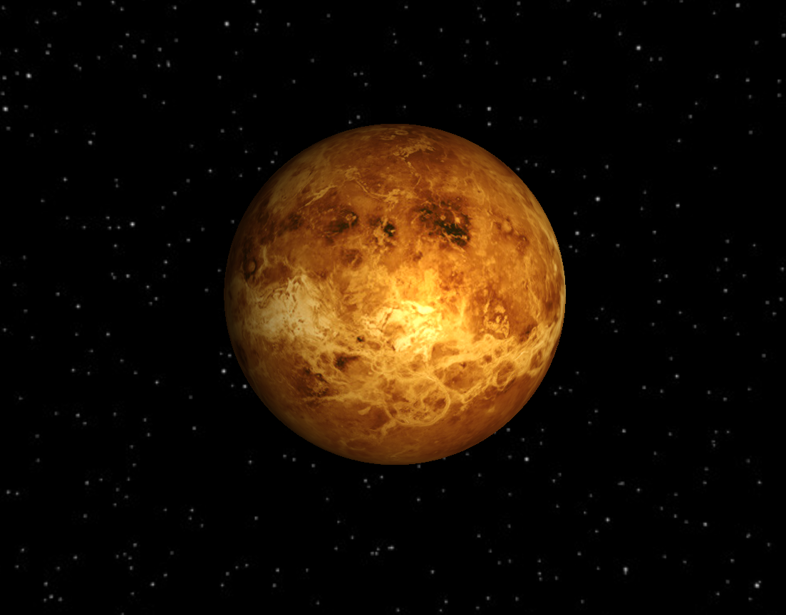
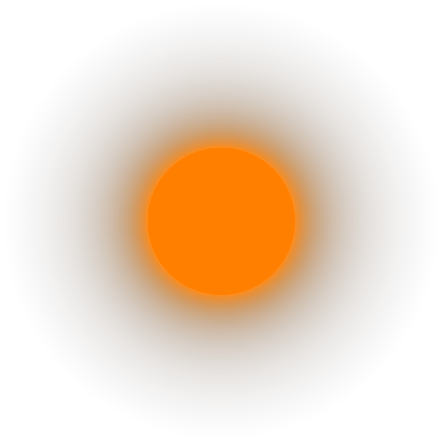

Welcome to the second exercise for the lecture introduction to computer graphics. The focus of this exercise is OpenGL. Topics that we will cover are:
- hierarchical coordinate systems
- basic rendering in OpenGL
- stereoscopic viewing
Building under Linux and MacOS
Inside the exercise's top-level directory, execute the following commands:
mkdir build cd build cmake .. make
The last command – i.e. make – compiles the application. Rerun it whenever you have added/changed code in order to recompile.
For MacOS, you will have to change the texture and model load paths from "../../texturename" to "../texturename" if you build without Xcode.
Building under Mac using Xcode
If you prefer to use Xcode on Mac, to the following:
mkdir build cd build cmake -G Xcode ..
and then open the generated Xcode project.
Building under Windows Visual Studio
- Install Visual Studio Community 2013 or later
- You will be asked, if you want to install additional packages. Make sure that you check the c++ development option.
- Inside the exercise's top-level directory create a new
buildfolder (CTRL + SHIFT + N) - Install CMake
- Start the cmake-gui.exe
- Click
Browse Sourceand select the exercise's top-level directory - Click
Browse Buildand select the createdbuildfolder - Click
Configureand select your Visual Studio version - Start Configuring.
- If no major errors occur, click
Generate - Start Visual Studio
- Use
Open Projectto load yourSolarSystem.sln - On the right, there should be the solution explorer. Find the project
SolarViewer, right click and chooseSet as StartUp Project - Press CTRL + F5 to compile and run
Documentation
You find a prebuild documentation in the directory doc. Open the doc/index.html with your favorite webbrowser.
Textures and Copyright
All earth textures are from the NASA Earth Observatory and have been modified by Prof. Hartmut Schirmacher, Beuth Hochschule für Technik Berlin. The sun and saturn ring texture is from Solarsystemscope.com. All other textures are Textures.com. The ship model if from free3d.com.
Keyboard Settings
- arrow keys or left mouse key + drag: Navigation Camera
- 9/0: change camera's distance to the observed object
- 1-8: set camera to planets/sun
- tab: set camera to ship
- W,S: accelerate/decelerate Ship
- A,D or left mouse key + drag: rotate ship
- r: randomize planets' positions
- g: toggle greyscale
- enter: switch mono/stereo view mode
- +/-: increase/decrease time_step
- space: pause
- escape: exit viewer
Recommended Order for the Exercises
- Setup of an Animated Solar System (3 points):
- Start by placing all celestial bodies in space and render them with
color_shader_inSolar_viewer::draw_scene(...)(src/solar_viewer.cpp). The result should look similar to this: - Each time the system is rendered,
Planet::angle_sun_andPlanet::angle_self_(src/planet.h) are increased inSolar_viewer::timer(). Use this to animate the solar system, i.e. make each body rotate around its own axis, around the sun, and – in case of the moon – around the earth. This will require more matrices inSolar_viewer::draw_scene(...)(src/solar_viewer.cpp). If you look at the system from above and wait some timesteps, the result should look similar to this: - Allow a kind of navigation through the solar system and for a change of the camera's agle and eye's distance to the celestial body. Details are in
Solar_viewer::paint()andSolar_viewer::keyboard(...)(src/solar_viewer.cpp). A video for comparison can be found in the video directory (videos/navigation.mp4)
- Start by placing all celestial bodies in space and render them with
- Phong Lighting (2 points): Implement the basic phong shader model (
src/shader/phong.vertandsrc/shader/phong.frag). The result should look similar to this: - Earth (2 points): For the earth, replace the phong shader with the earth shader (
src/shader/earth.vertandsrc/shader/earth.frag) that features a special night, gloss and clouds texture. The result can be seen in the videovideos/earth.mp4and should look similar to this: - Spaceship and Sunglow (2 points):
- Rotating around planets is boring. Let's implement a spaceship. Complete the simple .off reader in
Ship::load_model(...)to read the ship model. When this works, you can render the ship with your phong shader inSolar_viewer::draw_scene(...). Make sure that you update the viewmatrix correctly, when you are in the ship (Solar_viewer::paint()). The result can be seen invideos/spaceship.mp4and should look similar to this: - Let the sun shine: implement a simple billboard which is a textured quad that always faces the viewer. Fill the texture with color values in
Texture::createSunglowTexture()to mimic a fading aura around the sun. The result texture should look similar to this: - Then, render it in
Solar_viewer::draw_scene(...)with the color shader. To make sure, that it always faces the viewer completeBillboard::computeBillboardAngles(...). The result shoul look like
- If you want a video comparison check out the
spaceship.mp4in the video directory.
- Rotating around planets is boring. Let's implement a spaceship. Complete the simple .off reader in
- Stereo Rendering (1 points): Add stereo rendering to
Solar_viewer::paint()(src/solar_viewer.cpp). - Bonus Task (1 points):
- How about a more fancy planet? Like the beautiful Saturn with its asteroid rings? For this bonus task place both of them in our solar system.
- The mesh of the rings has to be completed in
Saturn_Rings::initGlArrays()(saturn_rings.h). Remember that the Saturn is slightly tilted, a comparison how it should look like can be found in the video directory (videos/saturn.mp4) - If you completed the sunglow task, you may notice that the rings and glow of the sun overlap in a weird way. Make sure that both of them are correctly rendered by choosing the right order.
- Optional features:
- Extend your color shader with a time and angle-dependent vertex shift to get a flow-like effect for your sun surface (details in
Solar_viewer::draw_scene(...)8. andcolor.vert. - The navigation of your ship is easy but not very realistic. You could improve that by vectorial forces and velocitys to update your position. Moreover, the celestial bodies should have a gravitational effect on it.
- Use the spaceship and billboards to create a little game: your ship might have a fuel tank, which empties over time and one has to collect fuel billboards to fill it or the user must fly to planets in a specific order (use the
Solar_viewer::randomize_planets()(key: r) function to get more challenging planet positions faster). - Maybe you noticed, that we just draw 6 of our 8 (poor pluto) solar systems' planets. But you can find all textures (plus pluto) in you
texturesfolder. So feel free to render them all. - In reality, a planet's orbit is not a circle but an ellipse. You can combine scaling and rotations to achieve this effect.
- We are always interested in your own ideas!
- Extend your color shader with a time and angle-dependent vertex shift to get a flow-like effect for your sun surface (details in